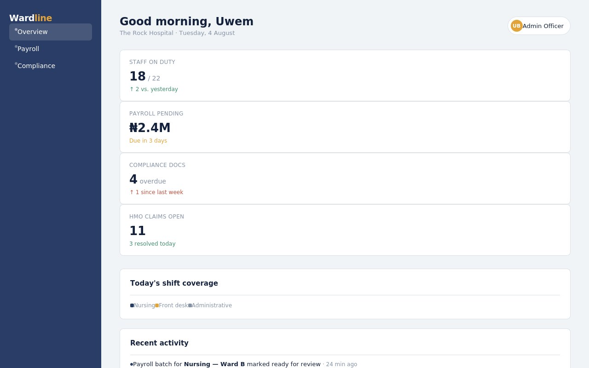
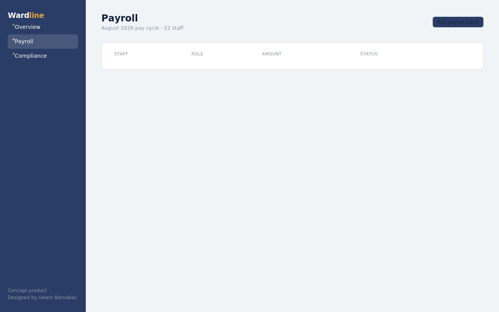
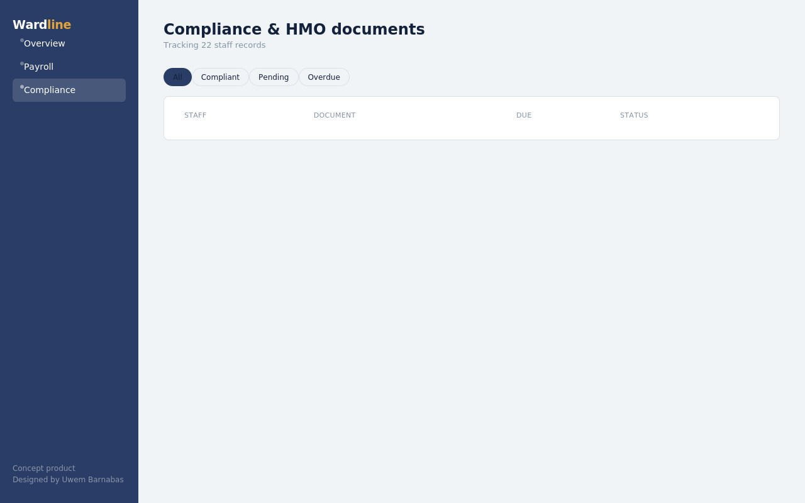
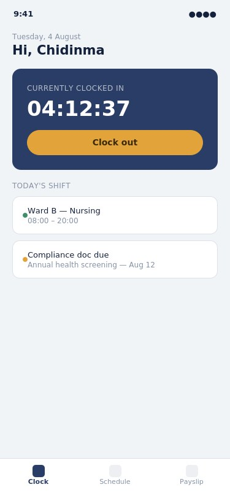
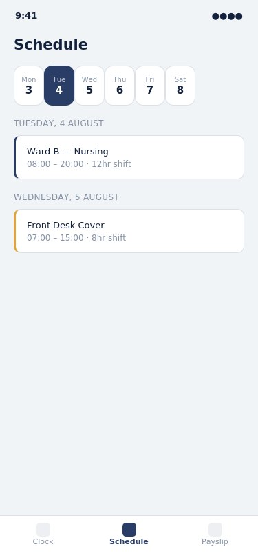
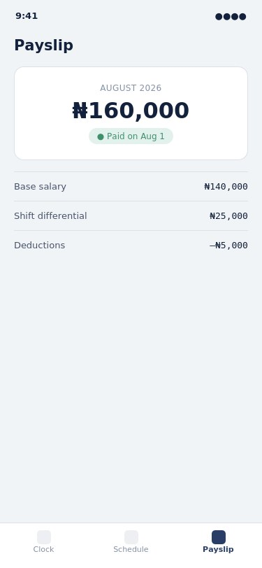

Wardline — an operations platform for hospital admin teams
A web dashboard and companion staff app, designed around the payroll, scheduling, and compliance work I did first-hand as an administrative officer at a hospital.
Where the idea came from
While working as an Administrative Officer at The Rock Hospital, I processed payroll, tracked staff compliance documents, and coordinated schedules — almost entirely through spreadsheets and paper trails. Nothing gave a manager a single view of who was on shift, whose documentation was overdue, or which pay batch still needed review.
Wardline is my answer to that gap: a lightweight operations platform an admin officer could actually use day to day, paired with a companion app so staff can clock in, check their schedule, and view payslips without chasing anyone down.
Web dashboard — for admin officers
The overview screen leads with what an admin officer checks first thing: who's covering today's shifts, what payroll is pending, and which compliance documents need attention. The shift coverage timeline is the piece I cared about most — it's a visual read of staffing gaps at a glance, something no spreadsheet gave me in the real job.

Payroll and compliance each get a focused view rather than being buried in a shared spreadsheet — payroll status is a glanceable pill (paid, pending, overdue), and compliance documents are filterable so overdue items can't hide in a long list.


The dashboard is fully clickable — switch between Overview, Payroll, and Compliance, and filter the compliance table by status.
Mobile app — for staff
The dashboard solves the admin side; the mobile app solves the staff side of the same problem. A nurse or front-desk staffer can clock in with one tap, see their week at a glance, and check a payslip without going through HR — the exact three things people actually asked about at the front desk.



Design decisions
- Status is always a color + label pill, never color alone — compliance and payroll data has real consequences if misread, so status needed to be unambiguous at a glance, including for colorblind users.
- The shift timeline uses horizontal bars, not a list — coverage gaps are a spatial problem (overlaps and holes across a 24-hour window), so the visual needed to be spatial too.
- The mobile app has exactly three tabs — clock, schedule, payslip — because those were the only three things staff consistently needed, based on what I fielded questions about in the real job.
What I'd build next
A shift-swap request flow between staff, and a notifications system so compliance deadlines surface before they go overdue rather than after.